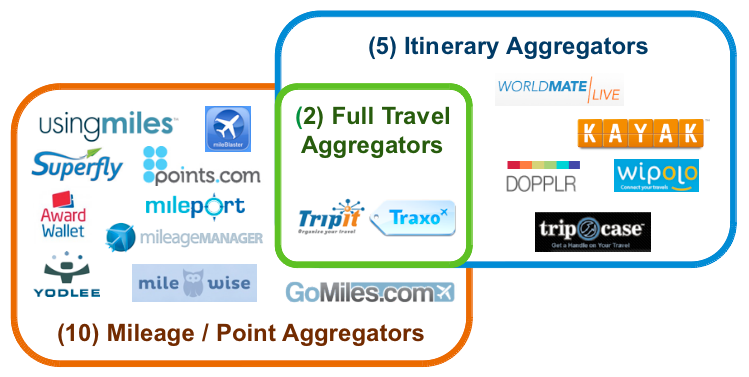

Practical API Strategy
Tools and Techniques
Chris Stevens
Engineering and Operations @Traxo
Engineer / Developer / Consultant
Pilot
Travel Industry
Large, Entrenched, Traditional Suppliers.
Disruptive Newcomers.
NO APIs
Big Problems
Fewer Travel Agents.
More Travel Websites.
Massive fragmentation.
DIY Travelers (38%)
Manually organizing travel details.
Multiple travel sites.
Stale information with limited portability.
Itinerary Management
Adding value for the Traveler
Comprehensive travel aggregator.
Deep travel industry experience.
5-yr Dallas "Startup".
"The Mint.com for travel"Source: TechLi.com
190 Travel Sources
Few Supplier-Side APIs

Consumer Channels
- Website (2008)
- Mobile Website (2010)
- Calendar Feeds (2010)
- Embeddable Widgets (2010)
- iOS/Android Mobile Apps (2013)
Traxo API
An evolution
2011 - Proof of Concept
A true "MVP".
A single CakePHP controller.
Attached to existing web application.
Documentation on Google Sites.
Manual api_key distribution.
Not fun to work on.
Good enough.
2012 - "Sales Tool"
Light Development. Maintenance.
Added Versioning. Twice.
Structured Travel Intent Data.
Commercial Interest Growing.
Partnership Discussions.
Finally...Traction.
Today - Product
Dedicated codebase.
Shared Middleware Libraries.
Self-service developer portal.
OAuth2. 3Scale.
Tuned for API serving.
New Opportunities
Commercialization. Monetization. Growth.
Mobile apps. Mashups.

Partnerships

"With the Traxo solution integrated with SAP Cloud for Travel, we expect our customers will have access to integrated travel itinerary and booking data in new ways – via a single channel," said Joe Fuster, senior vice president, Cloud, Customer and Money Line-of-Business Solutions, SAP.
Third-Party Integrations
General Motors In-Vehicle APIs

API Strategy
A lot like flying...
Start With a Takeoff
V1: Accelerating. Still time to stop
V1+: People are depending on you

All About The Journey Landing
Nobody Remembers the Takeoff

Planning is Important
But just get started

Many Routes
Pick one that supports your business

Monetization
Support
High-Touch. Especially Enterprise Customers.
API Devs Recommended.

{kind=link}
Measure Everything
In-House. Outsource. Use What Works.
Just Do It. From The Beginning.

Lessons Learned
From 5 years of bootstrapping
In the travel industry
Frameworks
Use what works for you
- What are you using already?
- Node.js
- API micro-frameworks (Slim for PHP)
Infrastructure
Code
Versioning
OAuth
Measure Everything
3Scale
Questions?
Twitter: @stevenscg
Github: @stevenscg